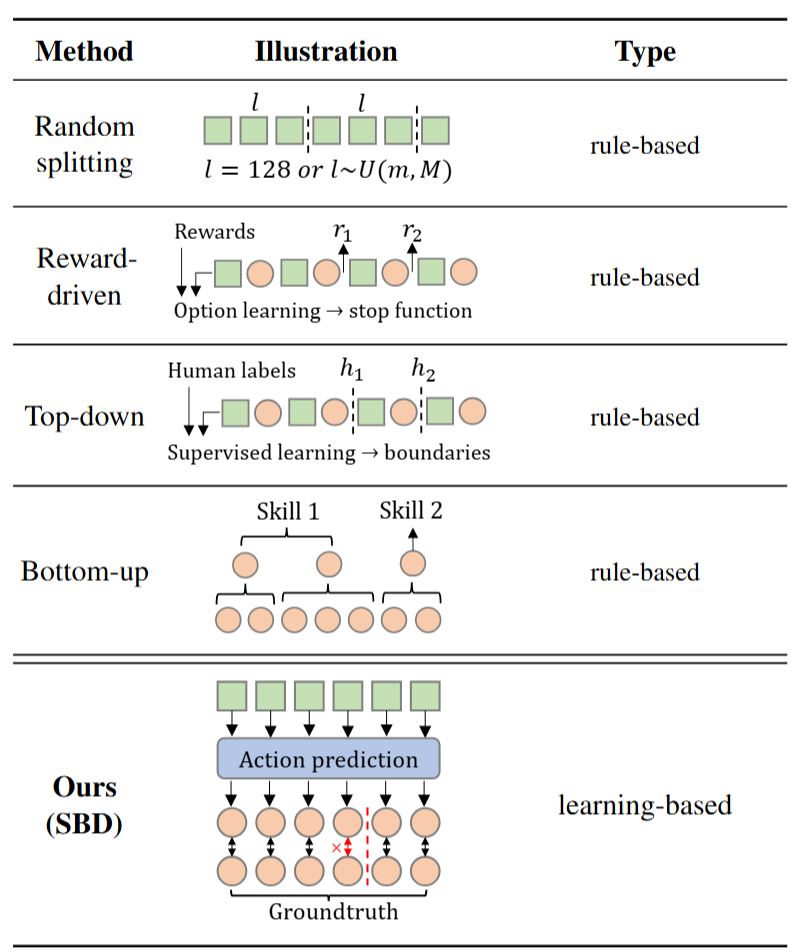

Learning skills in open-world environments is essential for developing agents capable of handling a variety of tasks by combining basic skills. Online demonstration videos are typically long and unsegmented, making them difficult to segment and label with skill identifiers. Unlike existing methods that rely on sequence sampling or human labeling, we have developed a self-supervised learning-based approach to segment these long videos into a series of semantic-aware and skill-consistent segments. Drawing inspiration from human cognitive event segmentation theory, we introduce Skill Boundary Detection (SBD), an annotation-free temporal video segmentation algorithm. SBD detects skill boundaries in a video by leveraging prediction errors from a pretrained unconditional action-prediction model. This approach is based on the assumption that a significant increase in prediction error indicates a shift in the skill being executed. We evaluated our method in the Minecraft environment, a rich open-world simulator with extensive gameplay videos available online. Our SBD-generated segments improved the average performance of two conditioned policies by 63.7% and 52.1% on short-term atomic skill tasks, and their corresponding hierarchical agents by 11.3% and 20.8% on long-horizon tasks.
Our method SBD for discovering skills from unsegmented demonstration videos consists of four stages:
Stage I: An unconditional Transformer-XL based policy model is pretrained on an unsegmented dataset to predict future actions (labeled by an inverse dynamics model) based on past observations.
Stage II: The pretrained unconditional policy will produce a high predicted action loss when encountering uncertain observations (e.g., deciding whether to kill a new sheep) in open worlds. These timesteps should be marked as skill boundaries, indicating the need for additional instructions to control behaviors. We segment the long unsegmented videos into a series of short atomic skill demonstrations.
Stage III: We train a conditional Transformer-XL based policy model on the segmented dataset to master a variety of atomic skills.
Stage IV: Finally, we use hierarchical methods (a combination of vision-language models and the conditional policy) to model the long demonstration and follow long-horizon instructions.
Use Furnace (Smelt Food)
Use bed (Sleep)
Use Torch
Use Boat
Use Bow
Use Flint
Open and Close Door
Hunt Sheep
Hunt Pig
Hunt Cow
Combat Zombie
Combat Spider
Collect Dirt
Collect Grass
Collect Wood
Collect Seagrass
Collect Stone
Collect Iron
Collect Diamond
|

*Green squares represent observations, and red circles represent actions. |
Existing methods usually rely on additional rules, while our method is learning-based. Sequential sampling methods divide videos into segments of predefined lengths (e.g., fixed length, uniform distribution). However, these methods do not ensure that each segment contains a distinct skill. Additionally, predefined lengths may not match the actual distribution of skill lengths in real-world scenarios. Reward-driven methods discover skills through the environment’s reward signal. It is limited by its inability to capture skills that lack associated rewards and by the risk of splitting a single skill into multiple segments when rewards are repeatedly gained during execution. Top-down methods rely on predefined skill sets from human experts. They use manual labeling or supervised learning to segment videos. Although this approach can produce reasonable results, it is expensive and limited by the narrow range of predefined skills. Bottom-up methods use algorithms such as agglomerative clustering or byte-pair encoding (BPE) to split action sequences. However, they struggle in partially observable settings where both observations and actions must be considered because these algorithms cannot deal with observations due to the high dimensionality. Our method SBD is annotation-free, adaptive at identifying diverse skills, and highly effective in open-world scenarios. |
We select basic skills such as chop down trees and advanced skills like smelt items with furnace in Minecraft as evaluation benchmarks.
We test 12 different skill sets designed in MCU.
Each task is tested over 100 times, except for sleep in bed and use bow, which are evaluated 10 times using human rating.
Scores with % indicate success rates, while those without % represent rewards for the corresponding tasks.
The seeds for the Minecraft environment are fixed for the corresponding task to make a fair comparison between different models.
The controllers showed substantial improvements across most tasks, with an average performance enhancement of 63.7% for GROOT and 52.1% for STEVE-1.
Programmatic tasks require the agent to start from an empty inventory in a new world until obtaining the final required items, such as “obtain an iron pickaxe from scratch”, which is usually a chain of atomic tasks. To further verify that the improvements in controllers enhance the ability of hierarchical agents, we evaluate Omnijarvis and JARVIS-1 on groups of programmatic tasks selected from the original papers. All tasks are tested 30 times. In each group, the agent is required to obtain a certain type of items from scratch or given an iron pickaxe. For example, the diamond group includes diamond pickaxe, diamond sword, jukebox, etc. The agents have substantial improvements across most of the tasks, achieving an average performance enhancement of 11.3% for Omnijarvis and 20.8% for JARVIS-1.